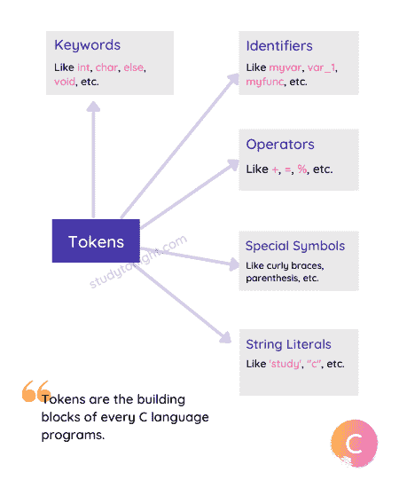

关键字和标识符
原文：https://www.studytonight.com/c/keywords-and-identifier.php
C 语言中的关键字和标识符是任何程序的构造块。关键字是预定义的，这意味着 C 语言有一个关键字列表，而标识符是用户定义的，这意味着您在编写 C 语言程序时可以指定标识符。让我们看看这两个是什么。
什么是关键字？
每种编程语言都有一些内部使用的、对语言有一定意义的保留词，这样的词被称为保留关键字或者只是关键字。
以现实世界为例，当有人说:你有我的笔记本电脑吗？你立即想象一台笔记本电脑，如果要求得到他/她的笔记本电脑的人有一只名叫“笔记本电脑”的狗(并且正在询问这只狗的情况)，你不会明白，除非你知道他/她有一只名叫“笔记本电脑”的狗。这会导致混乱，对吧。
因此，任何像 C 语言这样的编程语言为了某种特定的目的而在内部使用的单词，除了这个目的之外是不允许使用的，否则，语言编译器将会混淆。
在上一个教程中，我们学习了 C 语言语法 ，我们了解到 C 程序中的一切都是一个 Token 。
因此，我们可以说单词或关键字也是记号。
什么是标识符？
标识符是用于标识 C 语言中任何内容的单词或文本。
就像你有一个名字，用它大家都叫你，可以是约翰、罗恩、斯佳丽、莫妮卡等。，同样在 C 语言中，当我们定义一个变量或者一个函数，或者一个结构等。我们给它们命名，以便我们更容易识别它们，并在需要时使用它们。这些名称被称为标识符。
标识符也是代币。再次，因为每一个有意义的符号、单词等。在 C 语言中是 C 标记，因此标识符也是标记。

关键字
现在我们知道，关键字是在 C 语言中有特殊含义的保留词。
C 语言关键字的含义已经在 C 编译器中描述过了，这意味着 C 编译器知道这些词的含义以及它们之间的关系。
这些含义是不能改变的。因此，关键字不能用作变量名称或函数名称(简称为标识符)，因为这将试图改变关键字的现有含义，这是不允许的。
不能使用关键字作为标识符。这意味着您不能使用关键字来命名您的变量、函数、结构或指针或任何其他东西。
C 语言总共有 32 个关键字。
C 中的关键字列表:
以下是 C 语言中可用的关键字表。
| 汽车 | 两倍 | （同 Internationalorganizations）国际组织 | 结构 | | 破裂 | 其他 | 长的 | 转换 | | 情况 | 列举型别 | 注册 | 类型定义 | | 常量 | 走读生 | 返回 | 联合 | | 茶 | 漂浮物 | 短的 | 无符号的 | | 继续 | 为 | 签名 | 不稳定的 | | 系统默认值 | 转到 | 西泽夫 | 空的 | | 做 | 如果 | 静电 | 正在… |
所有这些关键字都是在 C89 标准中定义的，C89 标准是 C 语言的第一版，而一些更多的关键字是在后来的 C99 标准中加入的。
C99 增加的关键字有:
| Bool | 虚数 | 限制 | | _ 复杂 | 在一条直线上的 | |
每个关键字都有自己的含义，例如int关键字用于定义整数数据类型值，if / else用于定义条件语句等等。随着本教程的深入，我们将学习其中的大部分内容。
需要注意的要点:
关于关键字，这里有一些有用的要点需要记住。
关键字不能用作标识符(永远记住这一点)。
关键字必须用小写字母书写。除了一些基于 C99 的关键字，所有其他关键字都是小写的。
关键字对 C 编译器有特殊的意义，所以尊重它，否则你会得到一个编译时错误。
main()不是关键字，但你应该只把它当成关键字。因为这个函数是一个特殊的函数。如果你把任何变量命名为 main ，你可能会混淆编译器。
标识符
在 C 语言中，标识符是变量、常量、函数、结构、指针或任何其他用户定义的数据的名称，用于标识它们。
因为定义标识符是由用户决定的，所以有一些规则必须遵守，这些规则是由 C 语言定义的，以避免编译器中不必要的错误。
定义标识符的规则:
标识符只能有字母数字字符 (a-z，a-z，0-9)和下划线 (
_)。标识符的第一个字符只能包含字母 (a-z，a-z)或下划线 (
_)。标识符在 C 语言中区分大小写。例如，名称和名称将被视为两个不同的标识符。
关键字不允许用作标识符。
不允许在标识符中使用特殊字符，如分号、句号、空格、斜线或逗号。
使用标识符和关键字:
让我们看几个使用关键字和标识符的例子。我们将定义一个 C 变量，所以不要混淆，我们很快就会学习变量。
当我们在任何 C 语言程序中声明一个变量或任何函数时，要使用它，我们必须为它提供一个名称，然后这个名称在整个程序中使用，例如:
int myvariable = "Studytonight";
这里myvariable是存储值“今夜研究”的变量的名称或标识符。而int是关键字。它们都是信物。
我们再举一个例子，
int money;
double salary;
有效标识符的示例:
这里有一些有效的标识符，
total, avg1, difference_1;
无效标识符的示例:
这里有一些无效的标识符，
$myvar; // incorrect
x!y; // again incorrect
使用关键字作为标识符
当我们使用关键字作为标识符时会发生什么？
#include <stdio.h>
int main() {
// using void as name of variable (identifier)
int void = 0;
return 0;
}
错误:声明说明符 中有两个或多个数据类型 int void = 0； ^
C 语言编译器会认为我们错误地一起使用了两种数据类型，会给出一个错误。因为void在 C 语言中也是一个数据类型(因此是一个关键字)。
常见问题
以下是一些与关键字和标识符相关的常见问题。
Q1。标识符和变量有什么区别？
标识符只是变量的名称，而变量代表一个存储字段，根据其数据类型存储一些数据。就像你和你的名字有什么区别。你的名字只是人们称呼你的一个词，而你是一个人。
结论
本教程是关于 C 语言中的关键字和标识符的。它们都是令牌的一部分。C 语言中的标记被定义为 C 语言中最小的独立元素，是创建程序的基本构件。我们已经详细介绍了关键字和标识符以及它们的有效语法。